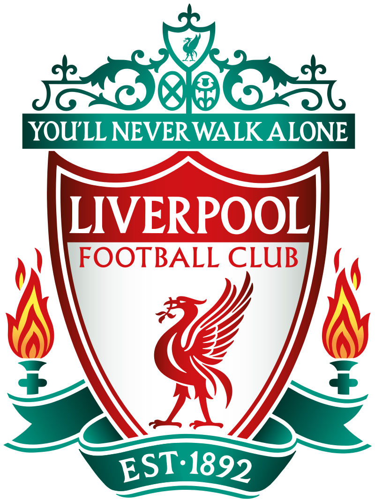
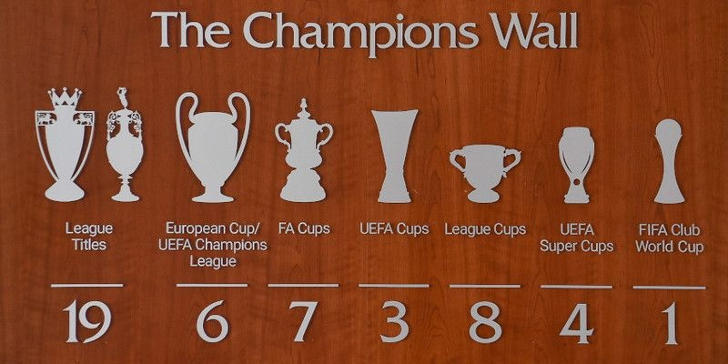
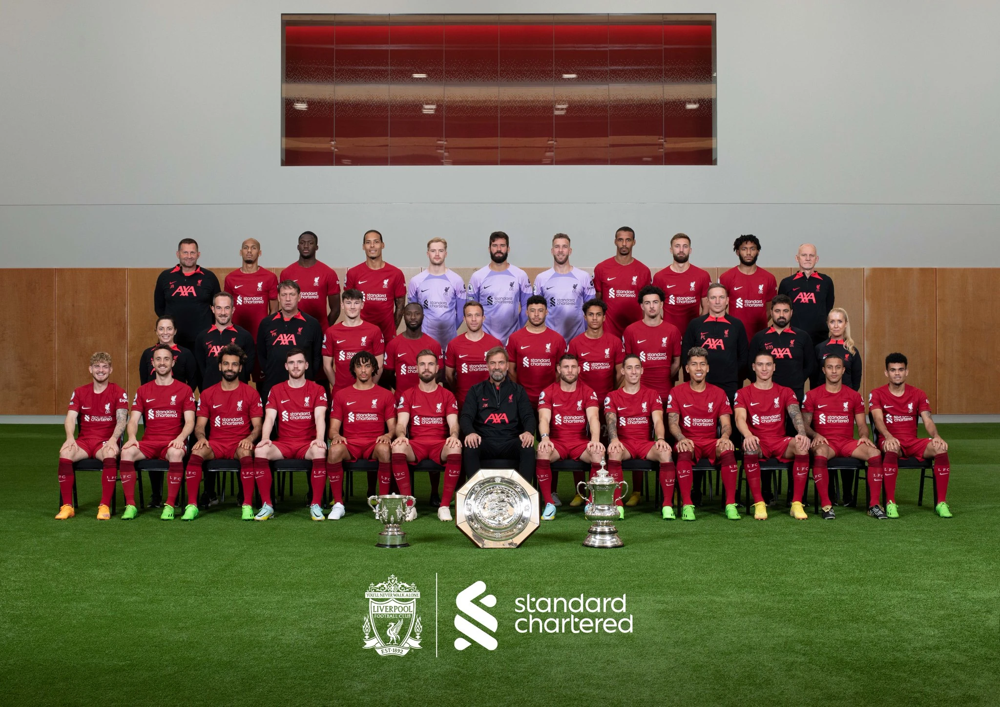
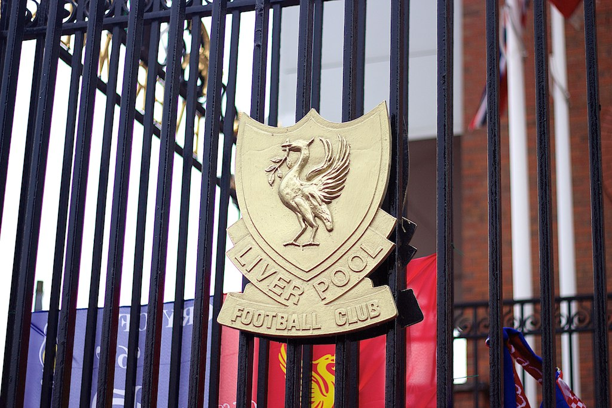
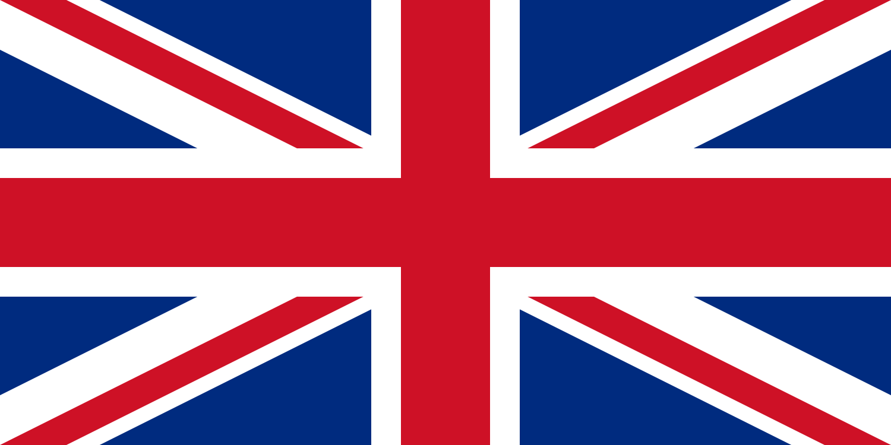
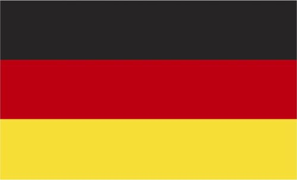
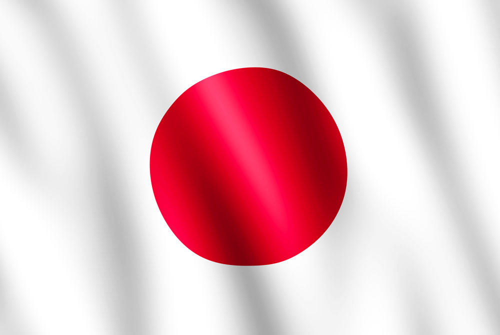
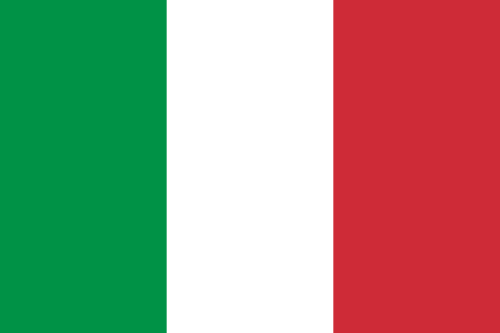
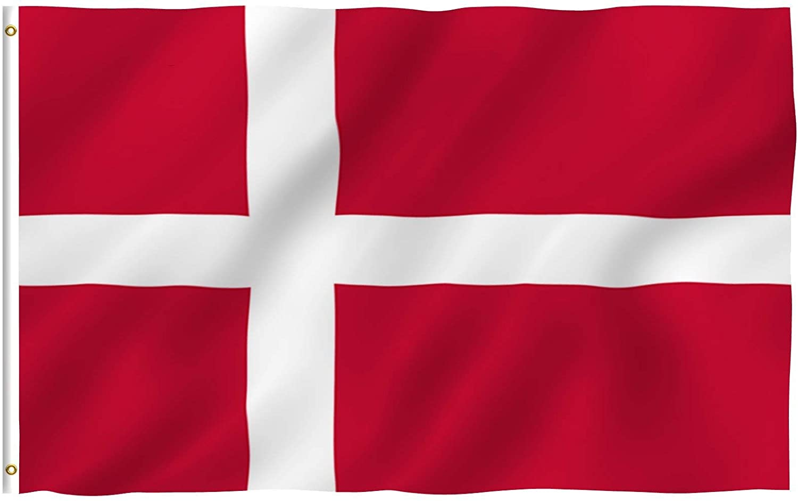

Краткая информация
«Ливерпуль» (полное название — Футбольный клуб «Ливерпуль») — английский профессиональный футбольный клуб из одноимённого города, расположенного в графстве Мерсисайд. Был основан в 1892 году; в следующем году вступил в Футбольную лигу Англии. С момента своего создания проводит домашние игры на стадионе «Энфилд». Стадион был построен в 1884 году, на нём изначально играл другой ливерпульский футбольный клуб, «Эвертон». В настоящий момент «Энфилд» вмещает порядка пятидесяти четырёх тысяч болельщиков.

Прозвища - «Красные» (англ. The Reds)
Основан - 3 июня 1892; 130 лет назад
Стадион - «Энфилд», Ливерпуль
Вместимость - 53 394
Владелец - Fenway Sports Group
Председатель - Том Вернер
Главный тренер - Юрген Клопп
Капитан - Джордан Хендерсон
Рейтинг - 2-е место в рейтинге УЕФА
Спонсор - Standard Chartered
«Ливерпуль» является 19-кратным чемпионом Англии, 8-кратным обладателем Кубка Англии, 9-кратным обладателем Кубка лиги, 16-кратным обладателем Суперкубка Англии, 3-кратным обладателем Кубка УЕФА, 6-кратным победителем Лиги чемпионов, 4-кратным обладателем Суперкубка УЕФА. В общей сложности «Ливерпуль» выигрывал еврокубки тринадцать раз, что является четвёртым результатом после мадридского «Реала», «Милана» и «Баварии». Самый успешный период в истории клуба приходится на 1970-е и 1980-е годы, когда командой руководили Билл Шенкли и Боб Пейсли, которые совместно на двоих выиграли 11 чемпионских титулов и 7 европейских трофеев.

Чемпионская стена с трофеями
Принципиальными соперниками клуба с давних лет являются английские команды «Эвертон» и «Манчестер Юнайтед», с которыми разыгрываются мерсисайдское и северо-западное дерби соответственно. Гимном клуба является песня You’ll Never Walk Alone, перепетая в дальнейшем ливерпульской группой Gerry & The Pacemakers.
По данным Forbes на 2018 год, «Ливерпуль» занимал восьмое место в списке самых дорогих футбольных клубов мира и оценивался в сумму 1,944 млрд долларов США. По данным аудиторской компании Deloitte, по итогам сезона 2016/17 «Ливерпуль» занимал 9-ю строчку в рейтинге футбольных клубов с ежегодным доходом в размере 424,2 млн евро.
В 2020 году «Ливерпуль» по результатам исследования CIES Football Observatory признан самым дорогим по составу клубом в Европе.

Символика и форма
Эмблема
В 1901 году гербом клуба стала птица Лайвер — один из символов города. Позднее над птицей появилось изображение ворот Шенкли с надписью «You’ll Never Walk Alone».

Форма
«Ливерпуль» традиционно играет в полностью красной форме, но это утвердилось лишь в середине 1960-х. Первоначальными цветами клуба были синий и белый, взятые у «Эвертона». Формы команд были практически идентичны в то время. В 1894 «Ливерпуль» выбрал красный и белый цвета. В течение следующих 60 лет в форму «Ливерпуля» входили красные майки с белыми трусами. Цвет гетр постоянно менялся на протяжении многих лет: красный, чёрный, белый, и снова красный. «Ливерпуль» был первым британским профессиональным клубом, разместившем логотип спонсора на футболке, после того как они согласились на сделку с Hitachi в 1979 году.
С 1992 по 2010 годы титульным спонсором клуба являлась датская пивоваренная компания Carlsberg, но в сентябре 2009 года стало известно, что с сезона 2010/11 вступает в силу четырёхлетнее соглашение между «Ливерпулем» и банком Standard Chartered, по которому клуб в течение этого времени получит 80 миллионов фунтов за размещение на своих футболках логотипа банка. Таким образом семнадцатилетнее сотрудничество между английским клубом и датской компанией (самое продолжительное в истории британского футбола) подошло к концу. 14 сентября «Ливерпуль» и Standard Chartered официально анонсировали подписание контракта.

Технические спонсоры
| Годы |
Производители формы |
| 1973-1985 |
Umbro |
| 1985-1996 |
Adidas |
| 1996-2006 |
 Reebok Reebok |
| 2006-2012 |
Adidas |
| 2012-2015 |
Warrior |
| 2015-2020 |
New Balance |
| 2020-н.в. |
Nike |
Титульные спонсоры
| Годы |
Спонсоры |
| 1979-1982 |
Hitachi |
| 1982-1988 |
Crown Paints |
| 1988-1992 |
Candy |
| 1992-2010 |
Carlsberg |
| 2010-н.в. |
Standard Chartered |
You'll newer walk alone